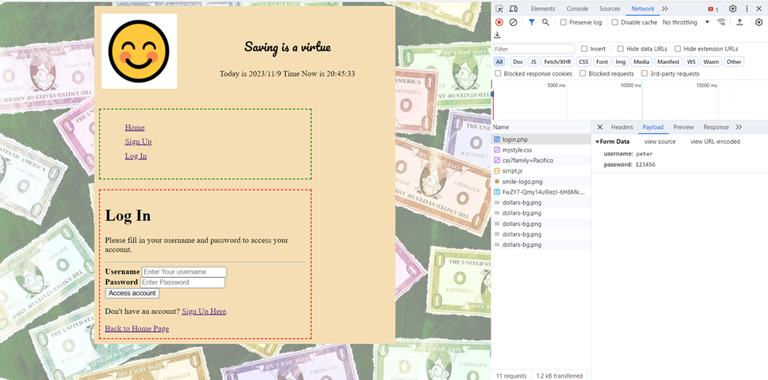
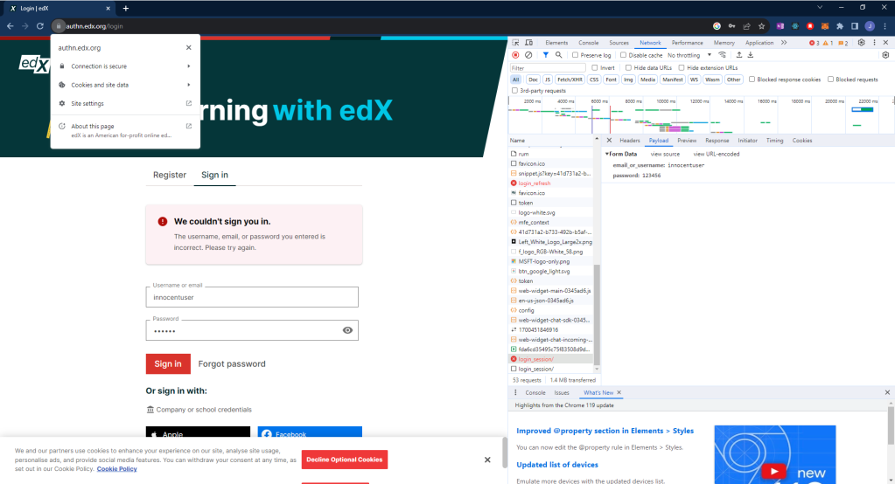

Man-in-the-Browser (MiTB) Attack, your password in the browser is in plaintext!
What is Man-in-the-browser (MiTB)?
A man-in-the-browser attack is an example of malicious code that has infected a browser. Code inserted into the browser can read, copy, and redistribute anything the user enters in a browser. To explain it simple, there is an invisible intruder sits between your browser and the remote server, watching your every keystroke.
Let’s look at this example:
You are going to login to an encrypted website. When you type in your credentials, you believe the data transmitted between you and the website is secure because the website address starts with HTTPS. It is true the transmission is secure, but the problem happens before your browser transmit your encrypted credentials. Your browser encrypts your credentials before transmission but not the moment your finish you typing and hit the submit button. The unencrypted payload—the plaintext version of your username and password—resides within your browser’s memory too. The attacker can use tools or techniques to intercept this payload from the network traffic. You can try this in your browser. I am using Brave browser in my bank project demo that I made before. When you type in your credentials, go to Developer Tool, and move to the Network tab that allows users to inspect network traffic. You will be surprised by seeing your credential is showing in plaintext (menu on the right).
Let’s try this on a real website, edX, with log in function. I am using Chrome browser this time. edX is definitely a secured website with encryption connection. After I type and submit, my username and password are shown in plaintext, even though the password showing on the frontend are masked!
Safeguarding Against MitB Attacks
- Certificate Validation:
- Always verify the website’s SSL certificate. Trust matters.
- If your browser warns of an invalid certificate, proceed with caution.
- Encryption Alone Isn’t Enough: While encryption ensures secure transmission, it doesn’t protect against local vulnerabilities.
- Secure Development Practices:
- Input Sanitization: Developers should validate and sanitize user inputs to prevent malicious payloads.
- HTTPS Everywhere: Encourage websites to enforce HTTPS consistently.
- Content Security Policies (CSP): Implement CSP to restrict resource loading and mitigate XSS attacks.
- User Awareness:
- Educate users about secure practices, such as avoiding public Wi-Fi for sensitive transactions.
- Two-Factor Authentication (2FA): Even if credentials leak, 2FA adds an extra layer of defense.
MitB attacks underscore the need for a multi-faceted approach to cybersecurity. By combining technical measures with user education, individuals and organizations can fortify their defenses against these stealthy threats, ensuring the protection of sensitive information in an increasingly interconnected world.